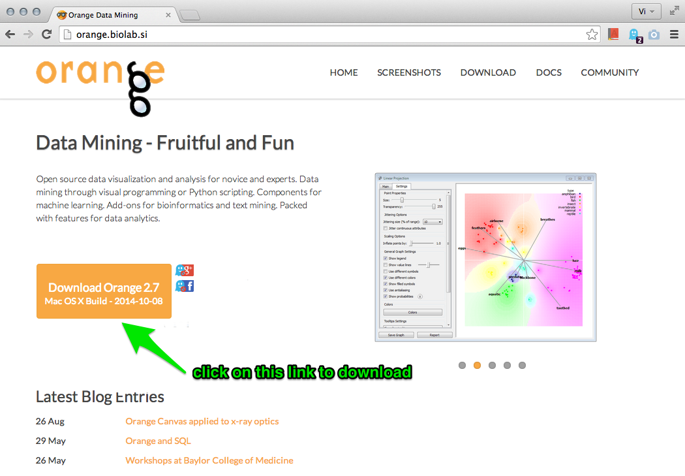
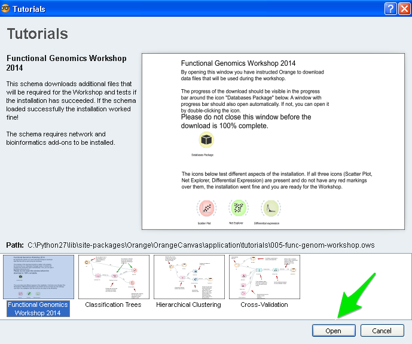
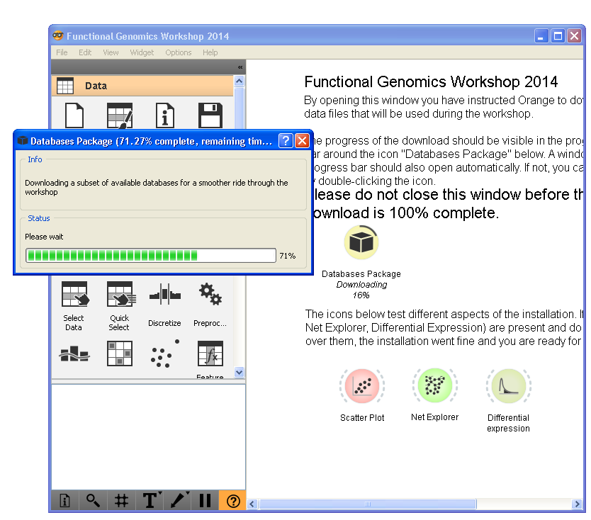

CIBR Workshop - Data Mining without Programming
Software Installation Instructions
The following instructions will guide you to install Orange data mining suite we will use at the workshop. If you have any questions or any problems with the installation, you are welcome to visit us at the Installation Clinic on Friday, Monday or Tuesday (May 16, 18, or 19) at Baylor College of Medicine, Smith Building, room S921 (Blaz Zupan and Marinka Zitnik). Installation Clinic will officially run from 2pm to 5pm, but you are also welcome to come by any other time.
Installation of Orange is operating-system specific, but common to Mac, Windows and Linux is that you need to
- install Orange with add-ons for bioinformatics and network analysis, and
- install a few data files that we will use during the workshop.
Step 1: Mac OS X
In a nutshell
Go to Orange home page at http://orange.biolab.si, download the latest version of Orange (the dmg file), install it on your laptop and continue to Step 2 below.
Detailed installation instructions
Go to Orange home page at http://orange.biolab.si to download the installation file.

Your browser will most likely save the installation file (a file with a name similar to Orange-2.7.5-11947.dmg) in your Downloads folder. Open the installation file by double clicking on its icon. A window like the one below should open. Drag the Orange icon to your Applications.

Open Orange from your Application folder. That is, open the Application folder, find an application with the name Orange, click on its icon to select it, and open it by choosing Open from Finder's File menu (you should use this procedure instead of double click to open unregistered applications for the first time). Continue to the Step 2 of this installation tutorial.
Step 1: Windows
In a nutshell
- Download and open Orange installer (exe file) from http://orange.biolab.si.
- Install all necessary tools that are offered by the installer (Python 2.7, NumPy, ...).
- Launch Orange Canvas from your desktop.
- With Orange running, close the splash screen and choose Add-ons from the Options menu.
- Tick the add-ons for Orange-Bioinformatics and Orange-Network and click OK.
- Restart Orange and go to Step 2 to install additional data files.
Detailed installation instructions
Download the installation file (the exe file) you will find on http://orange.biolab.si under the link “Orange 2.7 for Windows” (green arrow in the screenshot below). Save the downloaded file to an arbitrary location. Run the installation by double clicking the downloaded file. Choose Yes when asked whether you want to allow this program to make changes to your computer and accept the license agreement.
Accept to install all the necessary tools offered by the installer (Python 2.7, NumPy, SciPy, PIL, PyQt, ...). There are a number of them and installation will take a while.
Launch Orange by double-clicking the Orange Canvas icon on your desktop.
You should see a window like shown in the figure below. Close the welcome dialog.
From the Options menu choose Add-ons.
Tick the add-ons for Orange-Bioinformatics and Orange-Network. Click OK to start the installation. This may take a while.
Close Orange (choose Quit from the File menu) and re-open it. Continue to the Step 2 of this installation tutorial.
Step 1: Linux
Ubuntu (tested on Ubuntu 12.04 and 14.04)
Open a terminal and run the following commands.
Install the necessary system packages:
sudo apt-get update
sudo apt-get install python-numpy libqt4-opengl-dev libqt4-dev cmake qt4-qmake python-sip-dev python-qt4 python-qt4-dev python-qwt5-qt4 python-sip graphviz python-networkx python-imaging python-qt4-gl build-essential python-pip python-scipy python-pyparsing ipython python-matplotlibInstall Orange (this step will take about 15 minutes):
sudo easy_install -U distribute # optional on Ubuntu 14.04
sudo pip install --global-option="build_pyqt_ext" orangeInstall network and bioinformatics add-ons:
sudo pip install slumber
sudo pip install orange-bioinformatics
sudo pip install orange-networkStart Orange by running “orange-canvas” from the terminal. Continue to step 2.
orange-canvasFedora (tested on Fedora 20)
Open a terminal and run the following commands.
Install the necessary system packages:
sudo yum update
sudo yum groupinstall "KDE Software Development"
sudo yum install numpy scipy python-matplotlib ipython python-pandas sympy python-nose pyparsing python-pip gcc gcc-c++ python-networkx PyQwt
Install Orange (this step will take about 15 minutes):
sudo bash -c 'export PATH=$PATH:/usr/lib64/qt4/bin/:/usr/lib/qt4/bin/ && pip install --global-option="build_pyqt_ext" orange'
Install network and bioinformatics add-ons:
sudo pip install slumber
sudo pip install orange-bioinformatics
sudo pip install orange-network4. Start Orange by running “orange-canvas” from the terminal. Continue to step 2.
orange-canvasStep 2: Installation of Workshop Data Files
In a Nutshell
On Orange’s splash screen choose Tutorial, then press Open to open a preloaded workflow called “BMC Workshop”. Wait until the download finishes.
Detailed instructions
After running Orange at the end of Step 2, your laptop should now include the running version of Orange showing the welcome screen:

Click on the icon for Tutorial.
A window with tutorial workflows should open. The first workflow that has been designed to install all necessary data files for the workshop is already selected. Just click Open to open it and start the download of the data files.

A window similar to the one below should open. It will start downloading the data. This should not take more than a minute. Once the download is finished, close the topmost open window (“Databases Package”). Make sure that the Orange window called “BCM Workshop” shows the three colored icons (Scatter Plot, Net Explorer, Differential Expression) without any markings above. If this is so, congratulations, you have completed the installation. See you at the workshop! If this is no so, and you have any problems with the installation, please find us at Baylor at the Installation Clinic.
